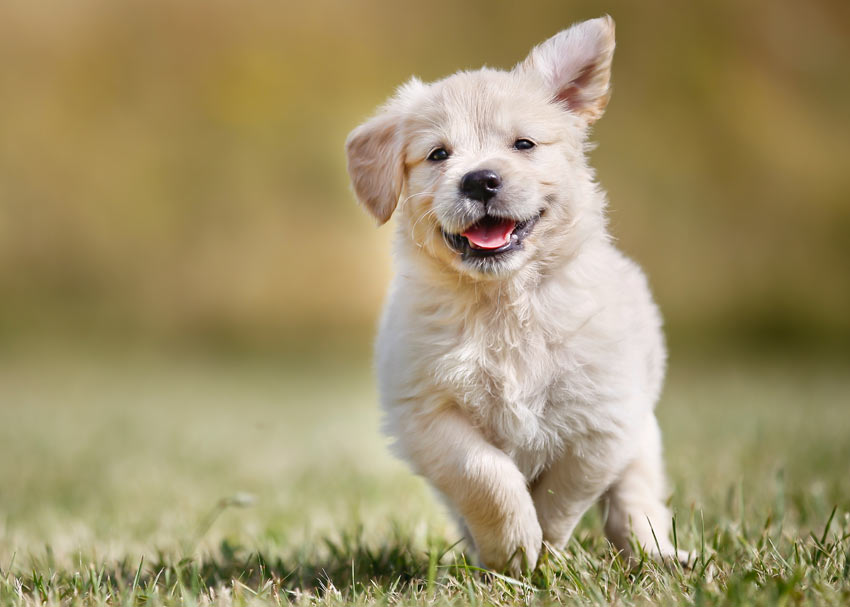

Hundpensionat Tassen är ett modernt och omtänksamt hundpensionat som erbjuder trygg omsorg när du behöver avlastning eller ska resa bort. Vi arbetar med små grupper för att kunna ge varje hund den uppmärksamhet den förtjänar. Varje dag innehåller flera promenader, lekstunder i vårt stora inhägnade uteområde, mental aktivering och lugna vilopauser i våra mysiga vilorum. Vi tar emot hundar i alla åldrar och anpassar aktiviteterna efter individens behov. Valpar får extra trygghet och rutiner, aktiva hundar får mer motion och lek, och äldre hundar får lugnare promenader och mjuka viloplatser. Vår personal har lång erfarenhet av hundhantering och arbetar alltid med positiv förstärkning och respekt för varje hunds personlighet. Som hundägare ska du känna dig helt trygg med att lämna din hund hos oss. Vi håller en hög standard på säkerhet, hygien och tillsyn, och ser till att varje hund får en dag fylld av glädje, trygghet och omtanke.
Under dagen får hundarna möjlighet att umgås med andra hundar i kontrollerade grupper, utforska vårt stora rastområde och delta i olika aktiviteter som stimulerar både kropp och sinne. Vi tror att en kombination av motion, lek och vila är nyckeln till en harmonisk och glad hund. Säkerhet och hygien är en viktig del av vår verksamhet. Våra lokaler rengörs dagligen och vi har tydliga rutiner för tillsyn, utfodring och medicinering vid behov. Om din hund har särskilda önskemål gällande kost eller rutiner gör vi vårt bästa för att anpassa vistelsen efter detta. Som hundägare ska du känna dig helt trygg med att lämna din bästa vän hos oss. Vårt mål är att varje hund ska åka hem trött, nöjd och glad efter en dag fylld av omsorg, aktivitet och gemenskap.

“Tassen tog hand om vår labrador som om det vore deras egen hund.”
– Karin, Solna“Fantastisk personal och trygg miljö. Vår valp älskade det!”
– Jonas, Kungsängen“Proffsigt, rent och väldigt omtänksamt. Rekommenderas varmt.”
– Sofia, Huddinge“Vi har provat flera pensionat – Tassen är överlägset bäst.”
– Marcus, Södertälje| Tjänst | Beskrivning | Pris |
|---|---|---|
| Hunddagis heldag | En heldag med promenader, lek, vila och social aktivering. | 320 kr |
| Hunddagis halvdag | Perfekt för kortare vistelser med tillsyn och aktivitet. | 190 kr |
| Pensionat per natt | Övernattning med egen viloplats, utfodring och tillsyn. | 450 kr |
| Klippkort 10 dagar | Prisvärt paket för regelbundna besök på hunddagiset. | 2 800 kr |
| Hämtningar och lämning | Transport av din hund till och från pensionatet. | 150 kr |
Din förfrågan sparas i din webbläsare – vi ringer upp dig.
Mån–fre 07–18 · Lördag 09–14 · Söndag stängt